机器学习-多标签学习
多标签学习
主要摘自http://palm.seu.edu.cn/zhangml/files/mla11-mll.pdf，部分参考https://link.springer.com/referenceworkentry/10.1007/978-1-4899-7687-1_910
推荐一篇知乎文章，也还不错，可惜我看到的时候笔记已经写完了。
Structure of Learning System
问题定义
表示 维的输入空间， 表示带有 个可能标签的标签空间。
训练集 ， 表示训练集的大小，有时候会省略。
任务就是要学习一个多标签分类器 ，对于任一实例 预测 作为 的正确标签集。对于每个训练样例 ， ，是一个 维的向量。 ，是 的一个标签子集。
在许多情况下，学习系统的输出往往对应于某个实值函数 ，这里， 可以看作实例 具有类别标记 的“置信度（confidence)。对于给定的实例 及其对应的类别标记集合 ，一个成功的学习系统将在隶属于 的类别标记上输出较大的值，而在不属于 的类别标记上输出较小的值，即 成立。此外，实值函数 还可转化为一个排序函数 ，该排序函数将所有的实值输出 映射到集合 上，使得当 成立时 亦成立。
上述的多标记分类器 其实可以由实值函数 转换而来：给定阈值函数 则 。换句话说，基于阈值 学习系统将标记空间二分为相关（relevant）标记集合与无关（irrelevant）标记集合。阈值函数通常设为常量函数（constant function）。值得注意的是，虽然多标记分类器 可以通过实值函数 对标记进行排序（并结合阈值函数）求得，但多标记学习问题和标记排序（label ranking）问题在本质上是不同的。
多标记学习的一般性（generality）使得解决该问题的难度大大增加。总的来看，多标记学习所面临的最大挑战在于其输出空间过大，即输出空间的类别标记集合数将随着标记空间的增大而成指数规模增长。
为了有效应对标记集合空间过大所造成的学习困难，学习系统需要充分利用标记之间的相关性（correlation）来辅助学习过程的进行。例如，如果已知一幅图像具有类别标记“狮子”与“草原”，则该图像具有类别标记“非洲”的可能性将会增加；如果已知一篇文档具有类别标记“娱乐”，则该文档同时隶属于类别标记“政治”的可能性将会降低。因此，如何充分利用标记之间的相关性是构造具有强泛化能力多标记学习系统的关键。基于考察标记之间相关性的不同方式，已有的多标记学习问题求解策略大致可以分为以下三类：
- 一阶（
first-order）策略：该类策略通过逐一考察单个标记而忽略标记之间的相关性，如将多标记学习问题分解为 个独立的二类分类问题，从而构造多标记学习系统。该类方法效率较高且实现简单，但由于其完全忽略标记之间可能存在的相关性，其系统的泛化性能往往较低。 - 二阶（
second-order）策略：该类策略通过考察两两标记之间的相关性，如相关标记与无关标记之间的排序关系，两两标记之间的交互关系等等，从而构造多标记学习系统。该类方法由于在一定程度上考察了标记之间的相关性，因此其系统泛化性能较优。然而，当真实世界问题中标记之间具有超越二阶的相关性时，该类方法的性能将会受到很大影响。 - 高阶（
high-order）策略：该类策略通过考察高阶的标记相关性，如处理任一标记对其它所有标记的影响，处理一组随机标记集合的相关性等等，从而构造多标记学习系统。该类方法虽然可以较好地反映真实世界问题的标记相关性，但其模型复杂度往往过高，难以处理大规模学习问题。
评价指标
在多标记学习问题中，由于每个对象可能同时具有多个类别标记，因此传统监督学习中常用的单标记评价指标，如精度（accuracy）、查准率（precision）、查全率（recall）等，无法直接用于多标记学习系统的性能评价。因此，研究者们相继提出了一系列多标记评价指标，总的来看可分为两种类型，即基于样本的评价指标（example-based metrics） 以及基于类别的评价指标（label-based metrics)
基于样本的评价指标
基于样本的多标记评价指标首先衡量分类器在单个测试样本上的分类效果，然后返回其在整个测试集上的均值（mean value）作为最终的结果。
对于给定多标记测试集 ，常用的基于样本的多标记评价指标包括：
Subset Accuracy
其中，对于任意的谓词 ，当 成立时 取值为 1，否则取值为 0。该评价指标用于考察预测的标记集合与真实的标记集合完全吻合的样本占测试集的比例情况。该指标取值越大则系统性能越优，其最优值为 。值得注意的是，当标记空间中包含大量类别标记（ 很大）时，学习系统往往难以给出与真实的标记集合完全吻合的预测，此时该评价指标的取值将会很低。
Hamming Loss
其中，算子 用于度量两个集合之间的对称差（
symmetric difference），算子 用于返回集合的势（cardinality)。该评价指标用于考察样本在单个标记上的误分类情况，即相关标记未出现在预测的标记集合中或无关标记出现在预测的标记集合中。该指标取值越小则系统性能越优，其最优值为 。值得注意的是，当 中的每个样本仅含有一个类别标记时，hamming loss的取值即为传统分类误差的 倍。
两个集合的对称差是只属于其中一个集合，而不属于另一个集合的元素组成的集合。
cardinality就是集合中元素的个数
One-Error
其中， 为与多标记分类器 对应的实值函数。该评价指标用于考察在样本的类别标记排序序列中，序列最前端的标记不属于相关标记集合的情况。该指标取值越小则系统性能越优，其最优值为 。值得注意的是，当 中的每个样本仅含有一个类别标记时，
one-error为传统的分类误差。Coverage
其中， 为与实值函数 对应的排序函数。该评价指标用于考察在样本的类别标记排序序列中，覆盖所有相关标记所需的搜索深度情况。该指标取值越小则系统性能越优，其最优值为
Ranking Loss
其中， 为集合 在标记空间 中的补集（
complementary set)。该评价指标用于考察在样本的类别标记排序序列中出现排序错误的情况，即无关标记在排序序列中位于相关标记之前。该指标取值越小则系统性能越优，其最优值为0Average Precision
看不懂，略。
基于类别的评价指标
这个讲的比较粗略
基于类别的多标记评价指标首先衡量分类器在单个类别上对应的二类分类（binary classification）效果，然后返回其在所有类别上的均值（macro-/micro-averaged value）作为最终的结果。
给定多标记测试集 ，对于第 个类别 而言，分类器 在该类别上的二类分类性能可由如下四个统计量进行刻画：
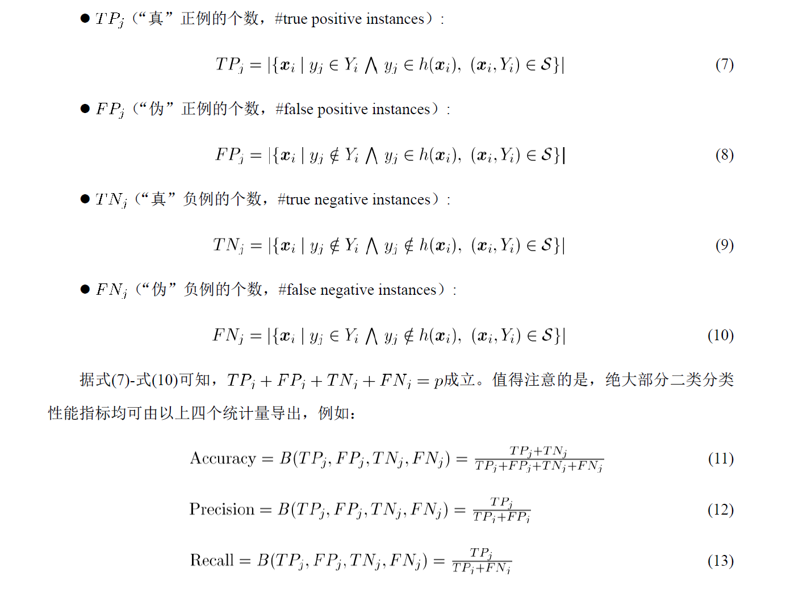基于此，令 代表由所定义的统计量求得的某种二类分类性能指标，则基于类别的多标记评价指标可采用如下两种方式获得：
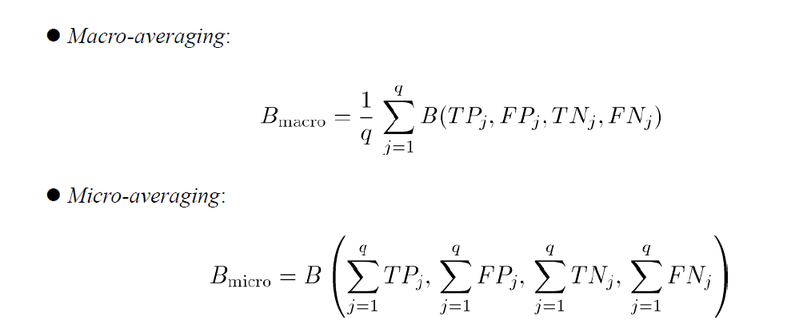其中，macro-averaging 首先基于统计量求得在各个类上的分类性能，然后再将所有类上的均值作为最终结果，其基本思想是为各个类赋予相同的权重。相应地，micro-averaging 首先将各个类上的统计量相加，然后再将求得的分类性能作为最终结果，其基本思想是为各个样本赋予相同的权重。
学习算法
算法分类
一般而言，算法研究是机器学习研究的核心课题，这一点对于多标记学习而言也不例外。目前已经涌现出了大量的多标记学习算法，总的来看大致可以分为两类：
- 问题转换（
problem transformation）方法：该类方法的基本思想是通过对多标记训练样本进行处理，将多标记学习问题转换为其它已知的学习问题进行求解。代表性学习算法有一阶方法Binary Relevance，该方法将多标记学习问题转化为二类分类（binary classification）问题求解；二阶方法Calibrated Label Ranking，该方法将多标记学习问题转化为标记排序（label ranking）问题求解；高阶方法Random k-labelsets，该方法将多标记学习问题转化为多类分类（multi-class classification）问题求解。 - 算法适应（
algorithm adaptation）方法：该类方法的基本思想是通过对常用监督学习算法进行改进，将其直接用于多标记数据的学习。代表性学习算法有一阶方法 ML-KNN，该方法将惰性学习（lazy learning）算法 K近邻进行改造以适应多标记数据；二阶方法 Rank-SVM，该方法将核学习（kernel learning）算法 SVM 进行改造以适应多标记数据；高阶方法 LEAD，该方法将贝叶斯学习（Bayes learning）算法Bayes 网络进行改造以适应多标记数据。
问题转换（problem transformation）方法
Binary Relevance
该算法的基本思想是将多标记学习问题转化为 个独立的二类分类问题，其中每个二类分类问题对应于标记空间 中的一个类别标记。
给定多标记训练集 ，其中 为隶属于实例 的相关标记集合。具体来说，对于第 个类别 而言，Binary Relevance 算法首先构造与该类别对应的二类训练集：
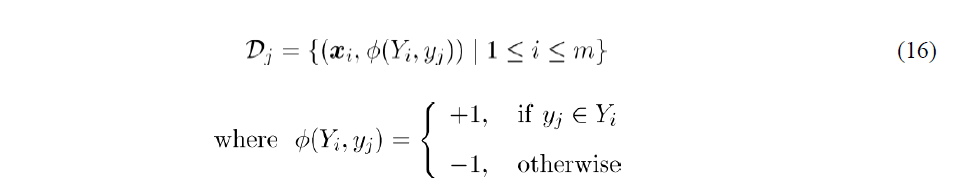 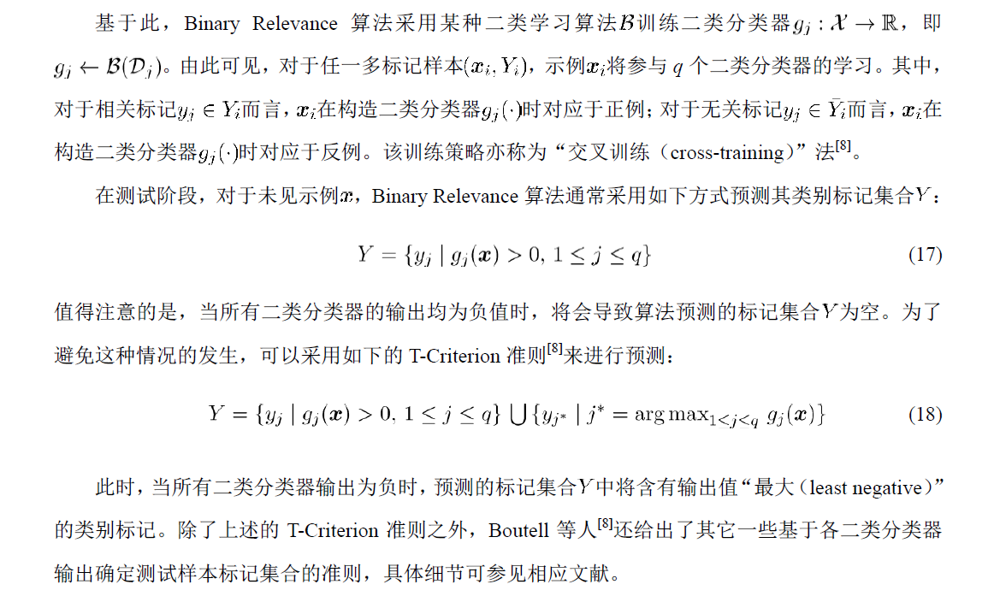样例
对于实例 ，对应的标签空间 如下图（ ：
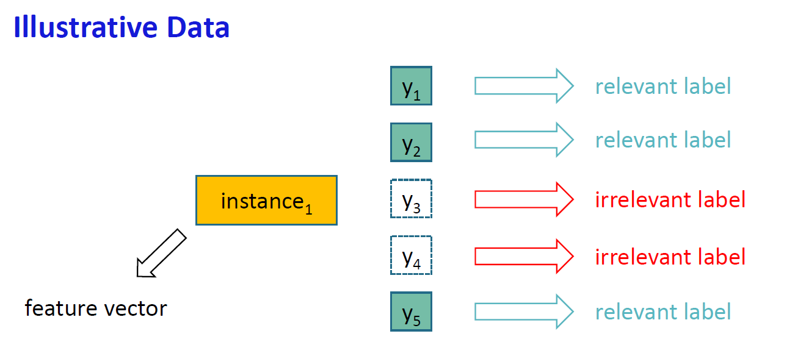其中实心的标签表示该标签与实例实例是相关的，虚线框的标签表示该标签与实例实例是不相关的。
于是我们就可以得到我们的训练集：
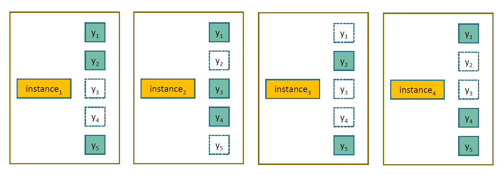对于每个标签，我们都可以训练得到一个二分类器，即判断某实例是否与标签相匹配。比如：
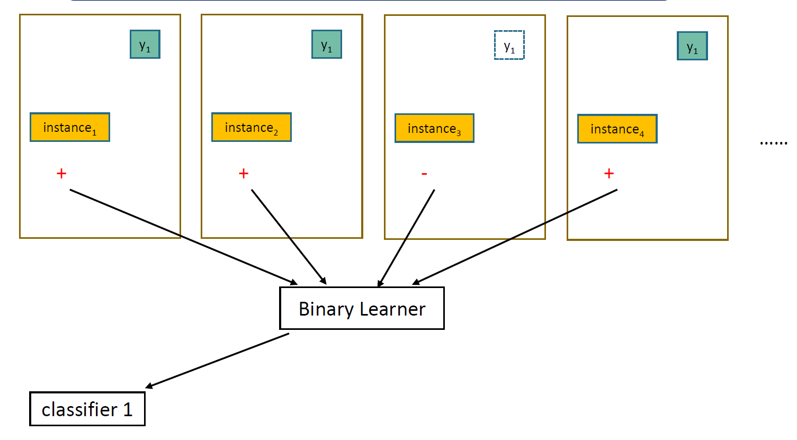对于测试集的某个测试实例，我们依次使用分类器，就能得到该实例对应标签空间下的标签情况。如：
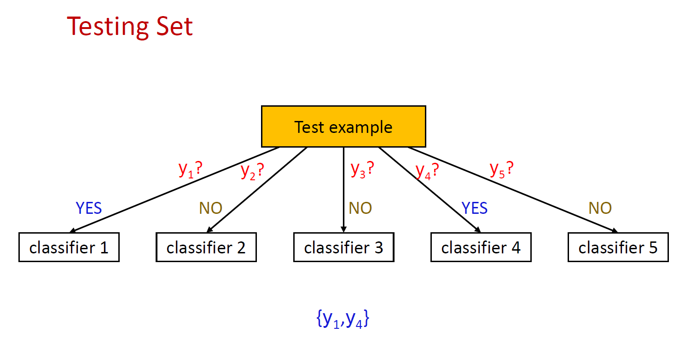但存在一个非常致命的问题，若我们每个二分类器准确率是0.98，那么对应 个标签，全部预测正确的概率（也就是总体的准确率）为 ，那么 。为了解决这个问题，我们必须探索标签之间的关系。
Calibrated Label Ranking
该算法的基本思想是将多标记学习问题转化为标记排序问题，其中标记排序采用成对比较（pairwise comparison）的方式实现。
对于具有 个类别的标记空间而言，针对每一个可能的标记配对 ，采用成对比较的方式将产生共计 个二类分类器。具体来说，对于标记配对而言， 成对比较法首先构造与该配对对应的二类训练集：
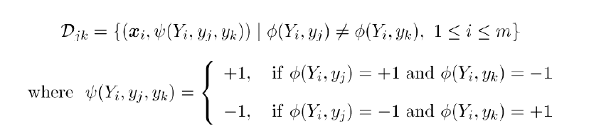 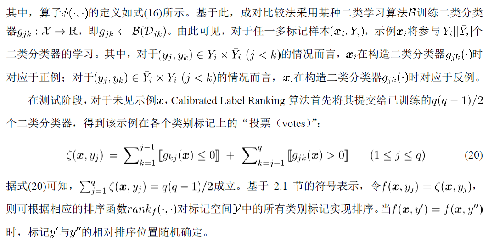 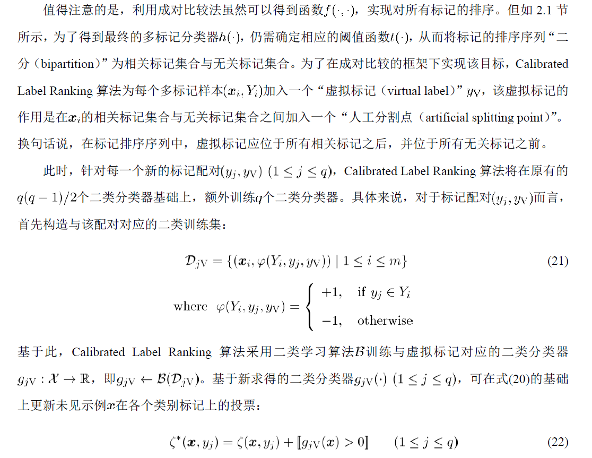 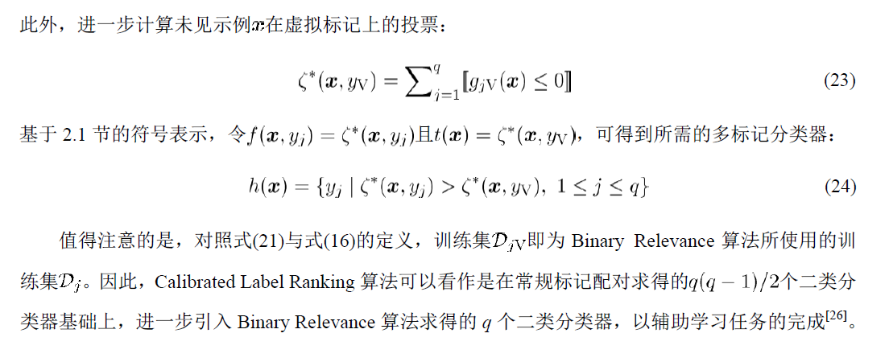样例
基于上式，我们对训练集进行构造：
对于对于每个训练样例 的每一可能的标记配对 ，若 ，则认为 是一个正例，若 ，认为 是一个反例，忽略其余的 。如下例：
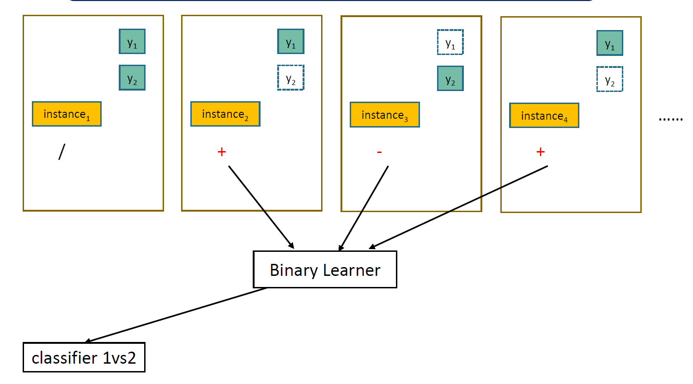然后我们使用这 个分类器对所有标签进行投票，按照票数多少对标签进行排序，得票越多说明该标签越有可能与该实例相关。但也有一个问题，肯定有一部分标签（当然，可能没有）与实例无关，我们该如何进行划分呢？
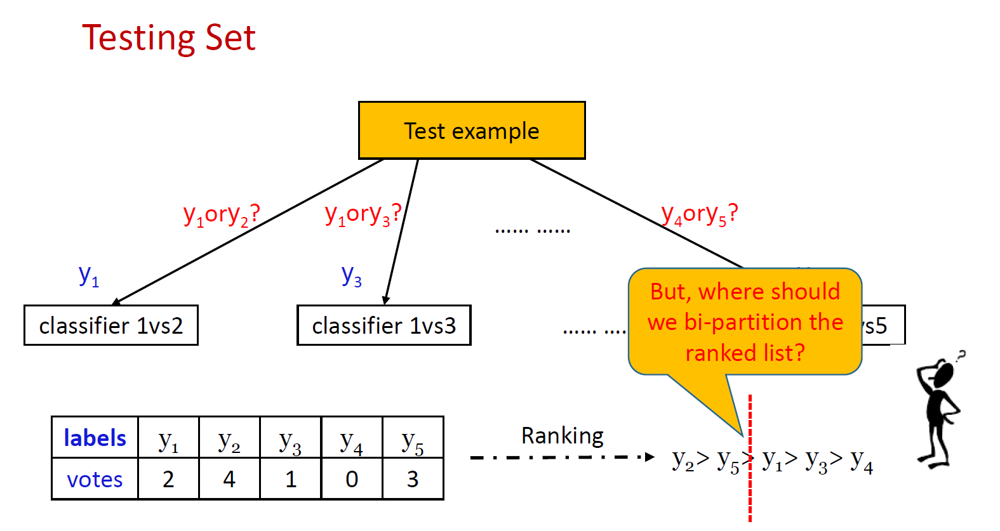前文提到：
…
上述的多标记分类器 其实可以由实值函数 转换而来：给定阈值函数 则 。换句话说，基于阈值 学习系统将标记空间二分为相关（
relevant）标记集合与无关（irrelevant）标记集合。阈值函数通常设为常量函数（constant function）。…
我们的解决方案是使用虚拟标签 加入模型训练，使用该标签作为划分标签是否与实例相关的依据。
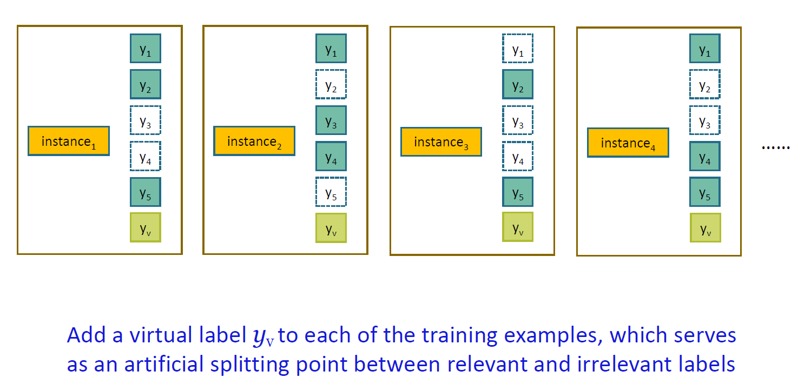也就是说，我们在训练时会得到形如这样的一些二分类器：
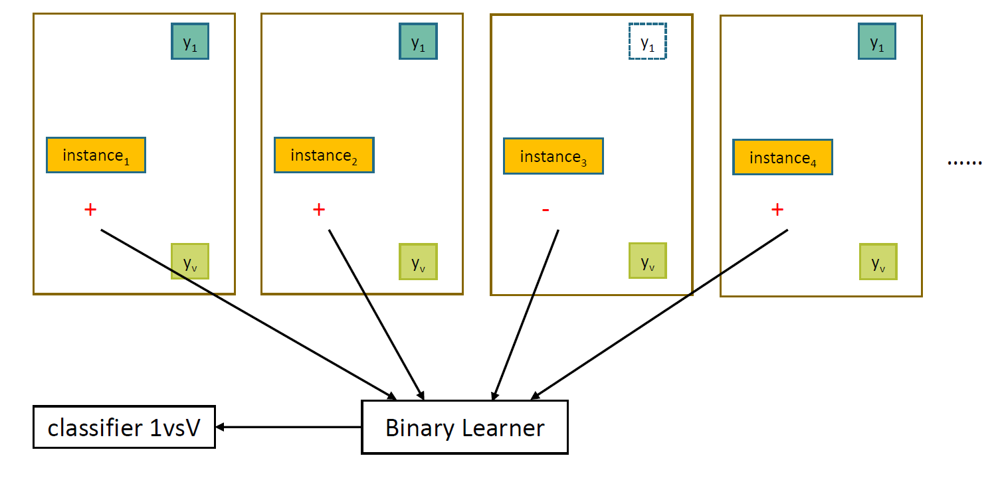然后，再在测试集上进行投票，得票数大于 的标签认为是与实例相关的标签：
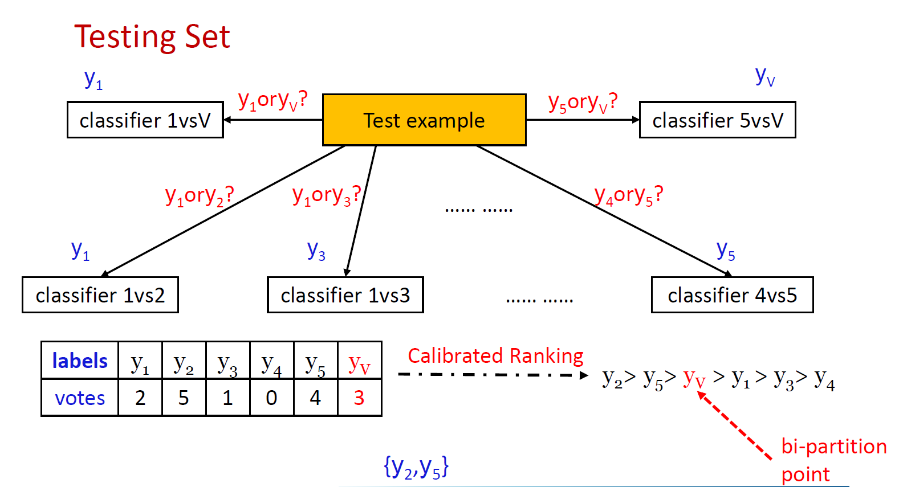PS.可不可能存在标签 ，得票数等于 。
确实是可能的，但是我们一定能从分类其中找到用于划分 和 的分类器，看这个分类器会怎么分（我们的测试集尽量是奇数，就不会出现测试集上对这两个标签投票都一样的情况）
但其实如果该分类器在测试集划分真的很均匀？是否说明 也有一定的置信度？抛弃 是否会导致可能的标签缺失？
Random k-Labelsets
该算法的基本思想是将多标记学习问题转化为单标签多类分类问题的集成（ensemble），集成中的每一个基分类器对应于标记空间 的一个随机子集，并采用Label Powerset的方式进行构造。
测试阶段理论表述太过复杂，直接略去了。看了头大。
样例
对于Label PowerSet(LP)：
限制分类的上限是 。 是训练集大小， 相当于所有可能的标签组合个数。当 的值很大（即标签数很多时），模型的复杂度会很高，且会出现每个分类的训练集有限，而且无法预测未出现过的标签集合。
在 LP 的过程中，我们将每个训练集中出现的标签集认为是一个新类，如下图，我们使用二进制的形式将标记空间 的幂空间映射到了自然数空间
然后针对所有类使用多分类的方法学习出一个模型：
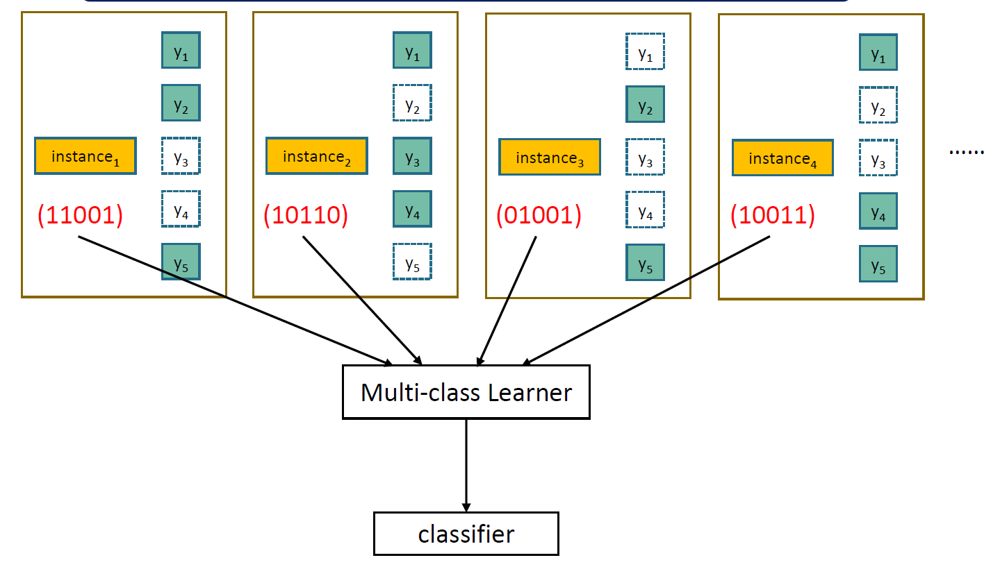对于 Random k-LabelSets :
我们从标签集 的 个标签中任意选取 个，对于这 个标签构成的标签子集 ，作为 LP 的标签集合进行构造。
最终由 个标签子集构造出一个 LP 的集成（ensemble）（），然后使用这个集成通过投票和阈值的方式进行预测（应该与 Calibrated Label Ranking 类似）。
构造的过程，例如（使用 ），最终得到 个 LP Model ：
最终我们使用这些分类器进行投票，将最终得票率归一化到一个 的值，以 0.5 为阈值对标签进行划分。
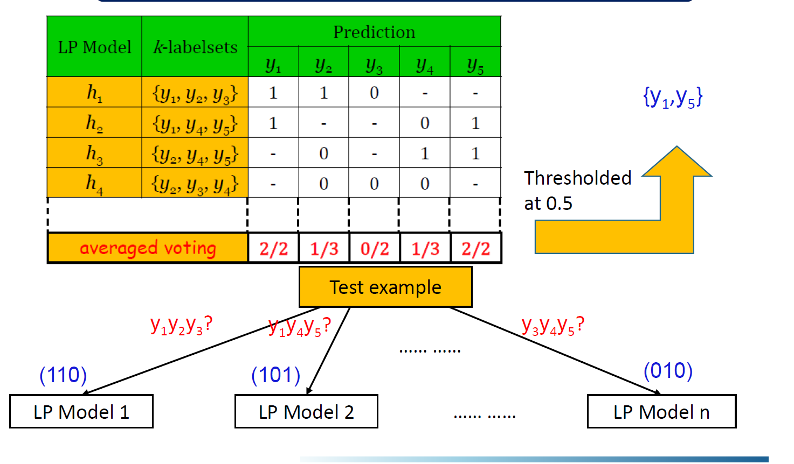测试阶段
基于上例，测试阶段的文献应该不难理解了
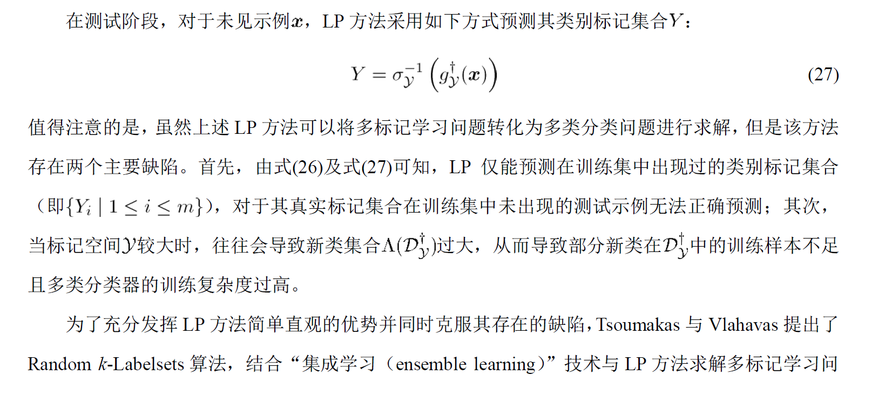 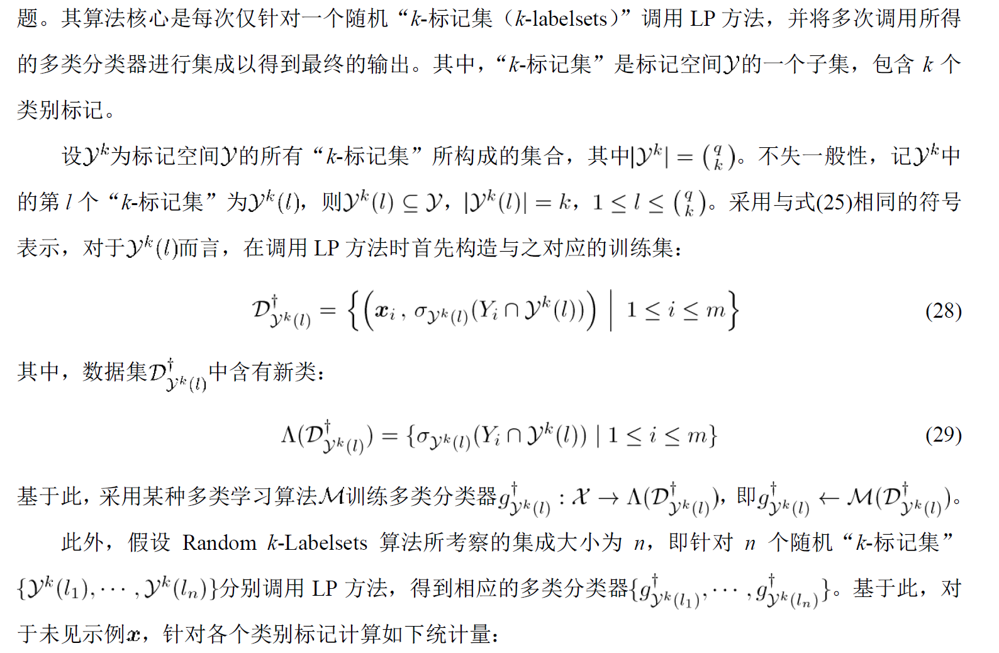 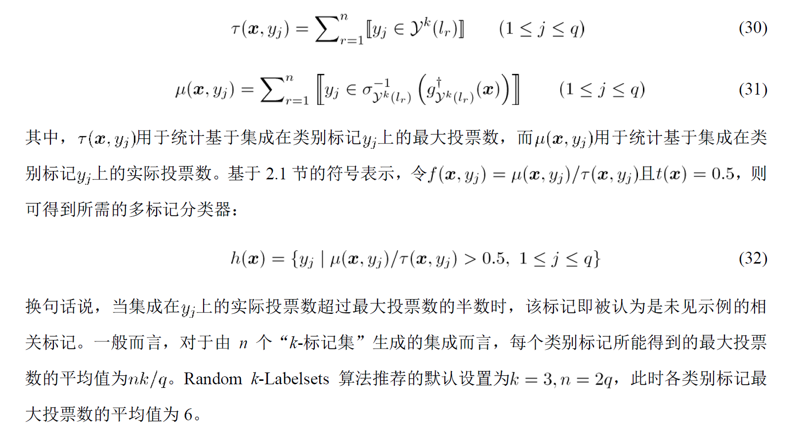
存在的问题及挑战
1、分类算法的性能有待提高
现如今已有的多标签分类算法的分类性能仍有待提高，同时多标签分类的输出空间会随着样本关联到标签个数的增长呈现指数式增长，导致分类问题变得越来越复杂，导致模型的整体性能较差。近年来，部分学者将深度学习应用到了多标签分类任务中，虽然对于传统算法而言精确度有所提升，但是深度学习模型较为复杂，导致基于深度学习的多标签分类模型的分类效率较低。
2、标签之间的依赖关系难以描述
对于标签之间的依赖关系的描述有三种策略：1、一阶策略，忽略标签之间的相关性，比如把多标签分类分解为多个独立的二分类问题；2、二阶策略，只考虑标签之间的成对关联关系；3、高阶策略，考虑多个标签之间的关联关系。针对具体的应用场景，该采用哪种相关性建模策略仍然是一个未解决的问题且缺乏相应的指导依据。
3、多标签分类数据集存在类别不平衡问题
同时，多样本分类数据集中正样本 / 负样本数量可能远远少于负样本 / 正样本数量，即多标签分类中存在类的不平衡问题，该问题也是单标签分类中常见的问题，该问题会导致大多数多标签分类方法性能的下降。例如，在预测肺癌的场景中，肺癌患者在所有来诊病人中所占的比例非常低，该场景下如果直接构建模型，会导致数据集以负样本为主，有很少的正样本。由分类模型的目标是希望准确率尽可能达到最高，因此该场景问题最终会导致预测的结果全部偏向负样本，但在实际生活中，医生和病人更加关注肺癌患者的情况，对非肺癌患者的关注度并没有那么高，类不平衡问题会严重影响到分类的效果。
4、多标签分类数据集含噪声
现有的多标签分类数据集，多数是由人工进行标注的，在人工标注的过程中由于各种各样的原因如每个人对相同事务的不同理解，造成标签的错误标注或者丢失了部分标注，最终得到的数据标签是不准确的或者是带有噪声的。因此在实际应用中，有完整正确的已知标签的数据量是很有限的，但是标签错误或者丢失部分标签的数据却很多。因此，有必要对此类数据进行深入研究，充分挖掘其内在的结构并将其应用到分类模型的构造中，进而提高分类准确度。
参考
https://zhuanlan.zhihu.com/p/134089340
https://github.com/Vay-keen/Machine-learning-learning-notes
https://github.com/familyld/Machine_Learning
https://zhuanlan.zhihu.com/p/25994179
https://leovan.me/cn/2018/12/ensemble-learning/
https://easyai.tech/ai-definition/ensemble-learning/
https://zhuanlan.zhihu.com/p/72415675
https://www.zhihu.com/question/63492375
https://www.zhihu.com/question/27068705
https://www.zhihu.com/question/19725590/answer/241988854
https://tangshusen.me/2018/10/27/SVM/
https://www.joinquant.com/view/community/detail/a98b7021e7391c62f6369207242700b2
https://zhuanlan.zhihu.com/p/79531731
https://blog.csdn.net/zc02051126/article/details/49618633
https://zhuanlan.zhihu.com/p/127022333
https://0809zheng.github.io/2020/03/30/ridge.html
https://www.cnblogs.com/wuliytTaotao/p/10837533.html
https://link.springer.com/referenceworkentry/10.1007/978-1-4899-7687-1_910#Sec13186
http://palm.seu.edu.cn/zhangml/files/mla11-mll.pdf
https://blog.csdn.net/zwqjoy/article/details/80431496
https://ryuchen.club/posts/0x000034/ (推荐）
https://zhuanlan.zhihu.com/p/78798251
https://zhuanlan.zhihu.com/p/622244758
https://www.biaodianfu.com/hierarchical-clustering.html
https://zhuanlan.zhihu.com/p/411533418
https://zhuanlan.zhihu.com/p/33196506
https://www.cnblogs.com/wry789/p/13125658.html
https://blog.csdn.net/qq_41485273/article/details/113178117
https://www.jianshu.com/p/7d4323c28716
http://lunarnai.cn/2019/01/02/watermelon-chap-13/
https://zhuanlan.zhihu.com/p/411533418
https://www.huaxiaozhuan.com/统计学习/chapters/12_semi_supervised.html
https://blog.csdn.net/tyh70537/article/details/80244490
https://zhuanlan.zhihu.com/p/37747650
https://blog.csdn.net/qq_40722827/article/details/104515955
https://www.cnblogs.com/dyl222/p/11055756.html
https://www.zhihu.com/tardis/zm/art/392908965
https://blog.csdn.net/j123kaishichufa/article/details/7679682
https://www.cnblogs.com/heaad/archive/2011/01/02/1924088.html
https://www.cnblogs.com/stevenlk/p/6543628.html
等等